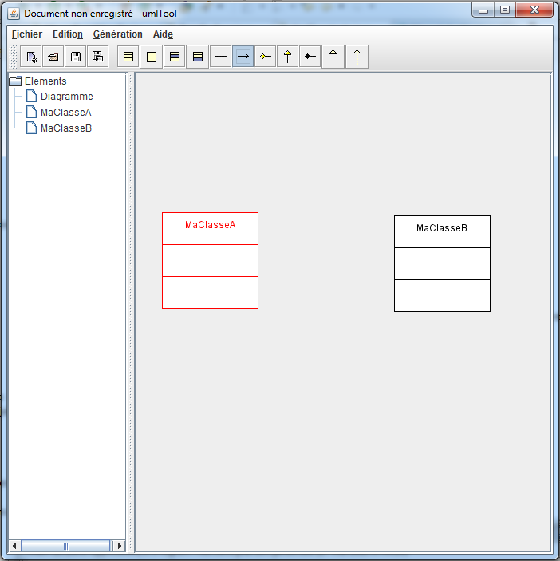
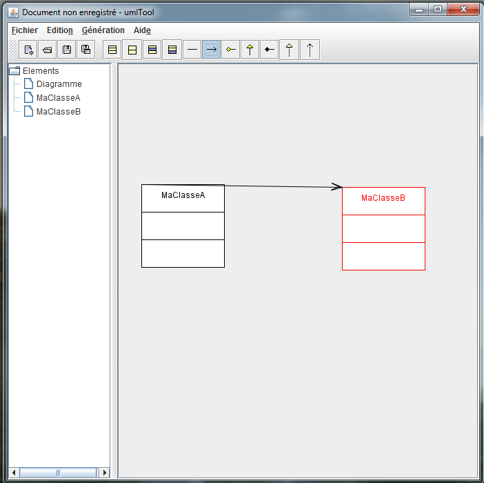

Manuel d'utilisation d'umlTool 1.0
I) Création de classes :
- Cliquer sur le bouton 'Nouvelle Classe'.
- Cliquer sur la surface de dessin.
- Choisir un nom.
- Ajouter des attributs ou des méthodes.
II) Création d'interfaces :
- Cliquer sur le bouton 'Nouvelle interface'.
- Cliquer sur la surface de dessin.
- Choisir un nom.
- Ajouter des méthodes.
III) Ajout de méthodes :
- Spécifier toutes les informations nécessaires à votre méthode.
- Cliquer sur 'Ajouter méthode' pour créer une nouvelle méthode dans la liste courante.
- Une fois terminé, cliquer sur 'Valider'.
IV) Ajout attribut :
- Spécifier toutes les informations nécessaires de votre attribut.
- Cliquer sur 'Ajouter attribut' pour créer un nouvel attribut.
- Une fois terminé, cliquer sur 'Valider'.
V) Ajout de liens entre les classes ou les interfaces :
- Choisissez l'un des liens à établir.
- Le sens de création d'un lien dépend de l'ordre de sélection des objets : un objet sélectionné apparaît en rouge.
- Cliquer dans le vide pour déselectionné un objet.


VI) Générer du code java, c++ ou sql :
- Génération > Générer le code...
- Choisir le langage.
- Choisir le dossier de destination
VII) Exporter au format .png :
- Fichier > Exporter le graphe...
- Choisir le dossier de destination. Le fichier créé est diagramme.png